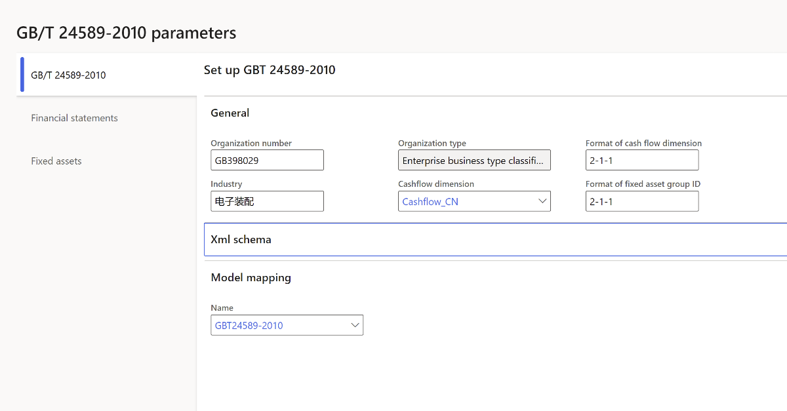
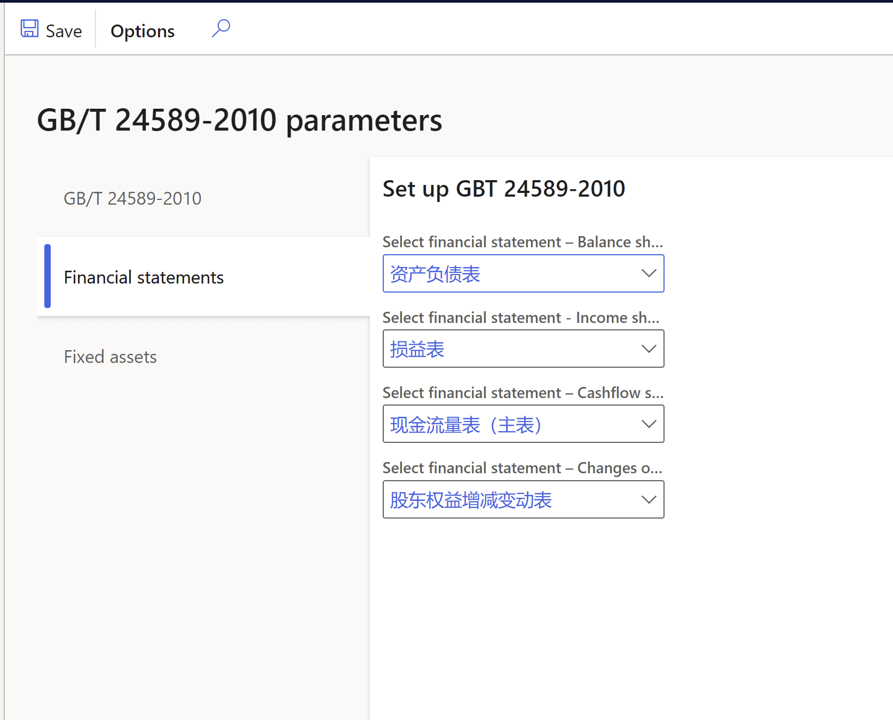
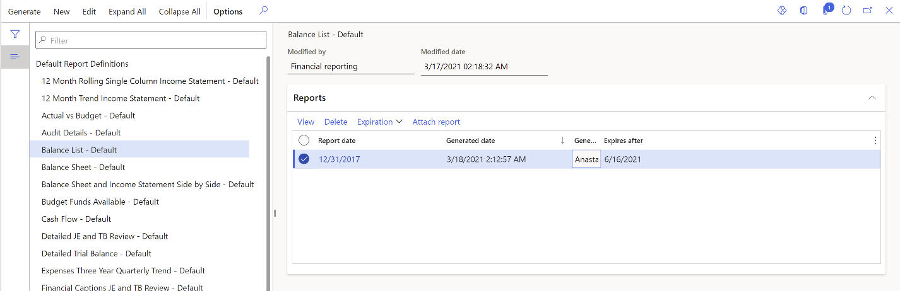
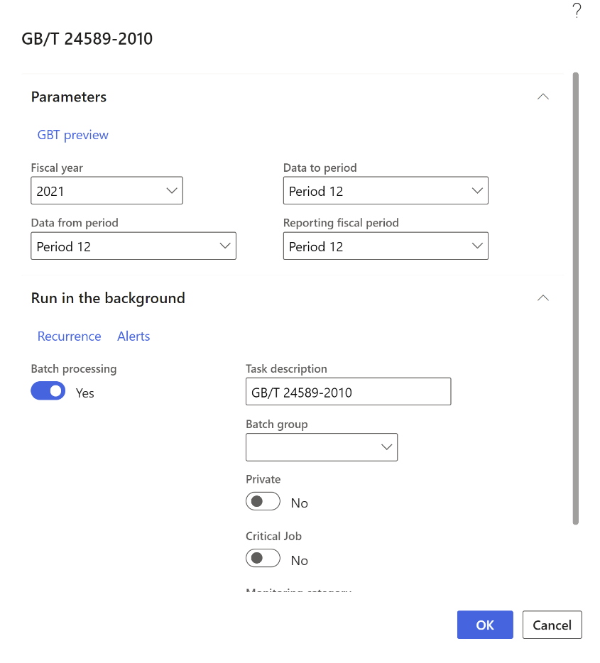

GB/T 24589-2010 export
[!include[banner](../includes/banner.md)]You can use the GB/T 24589-2010 export feature to export accounting data, including master data and transaction data, to several XML files for a specific period. Authorities or auditors can then import the XML files into their system to audit or verify a company's financial results.
Accounting data is exported into the following files:
- Common master data.xml, which includes 12 data tables.
- General ledger.xml, which includes 9 data tables.
- Fixed assets.xml, which includes 11 data tables.
The following table provides more details about the content of each file.
| Common.xml | General ledger.xml | Fixed assets.xml |
|---|---|---|
| 01 E-ledger book | 01 Parameters of chart of accounts | 01 Fixed asset posting profile |
| 02 Fiscal period | 02 Chart of accounts | 02 Fixed asset group |
| 03 Voucher types (Chinese vouchers) | 03 Account structures | 03 Fixed asset change types (change history) |
| 04 Exchange rate | 04 Cash flow | 04 Depreciation methods |
| 05 Currency | 05 Account balances and net amount; calculated | 05 Fixed asset status |
| 06 Payment methods | 06 Ledger voucher | 06 Fixed asset cards with financial information |
| 07 Departments | 07 Cashflow related vouchers (transactions of monetary ledger account) | 07 Fixed asset cards with physical information |
| 08 Employees | 08 Financial reports: Balance sheet, Profit and loss statement, Cash flow statement, Changes of owner's equity | 08 Fixed asset usage |
| 09 Vendors | 19 Financial reports contents | 09 Fixed asset disposal - financial information |
| 10 Customers | N/A | 10 Fixed asset disposal - physical information |
| 11, 12 Financial dimensions | N/A | 11 Fixed asset changes (change history) |
Enable the feature for batch processing
In the Feature management workspace, enable the feature, GB/T 24589 running in batch.
Import electronic reporting configurations
In the Electronic reporting workspace, download the GBT24589-2010 model and the configurations that are located under the model:
- General ledger format (CN)
- Fixed assets format (CN)
- Common master format (CN)
For more information, see Download ER configurations from the Global repository of Configuration service
Set up financial reports
To set up financial reports, follow the guidance in Financial reporting overview.
You can also complete the following steps to import example reports from the LCS Shared asset library.
In LCS, select the Shared asset library, and then select the Localized financial report asset type.
Download the China Financial Statements.tdbx file.
Upload the downloaded file in the Report Designer following the guidelines in Import a building block group.
The following example reports will be imported.
Report name English translation 资产负债表 Balance sheet 损益表 Income statement 股东权益增减变动表 Statement of Changes in Shareholders' Equity 现金流量表 Cash flow statement
Set up GB/T 24589-2010 parameters
To set up GB/T 24589-2010 parameters, complete the following steps.
Go to Organization administration > Setup > GB/T 24589-2010 to open the GB/T 24589-2010 parameters page.
On the GB/T 24589-2010 tab, on the Model mapping FastTab, in the Name field, select GBT24589-2010.

On the Financial statements tab, select the appropriate financial statements in the following fields:
- Select financial statement – Balance sheet
- Select financial statement - Income sheet
- Select financial statement – Cashflow sheet
- Select financial statement – Changes of owner's equity

Generate GB/T 24589-2010
To generate GB/T 24589-2010 parameters, complete the following steps.
Generate a financial report
Go to General ledger > Inquiries and reports > Financial reports.
Select one of the financial statements that you selected in the previous procedure and then select Generate.

Select Clip to open the attachments. Verify that the system XML file is attached to the report.
For any financial statements that you selected on the GB/T 24589-2010 parameters page, you can select a line on the Reports FastTab, and then select Attach report to attach the system XML file to the report if the original file is lost or deleted.
Note
You don't need to take any actions with the created system XML file. This file is used by the GB/T 24589-2010 export function as a data source file that contains the result of financial statement calculation.
Generate GB/T 24589-2010
Go to General ledger > Periodic tasks > GBT-24589 export.
In the GB/T 24589-2010 dialog box, select Fiscal year, Data from period, Data to period, and Reporting fiscal period.
Note
The GB/T 24589-2010 export procedure selects the financial statement report line according to the value in Reporting fiscal period field. The system XML file content is added into the GB/T 24589-2010 General ledger.xml report.
On the Run in the background FastTab, set Batch processing to Yes to run the report in batch.
Select OK.

Go to Organization administration > Electronic reporting > Electronic reporting jobs
Select the line and when the job status is marked as Finished, select Show files to review the generated files.